서원과 향교에서 배움과 제향은 건물의 이름만으로 설명되지 않는다. 문을 열고 마당을 건너며 의례를 준비하는 몸짓 속에서 전통은 지금도 실행된다.
나는 전각 전체와 손의 동작, 내부와 외부를 번갈아 보았다. 일부 사진을 딥틱으로 묶은 까닭은 한 장면만으로는 건축과 행위의 관계를 다 보여줄 수 없기 때문이다.
이 연작은 옛 건물을 보존된 형태로만 제시하지 않고, 사람들이 그 안에서 배우고 모이고 예를 행하는 방식에 주목한다.
At seowon and hyanggyo, learning and ancestral rites cannot be understood from the names of buildings alone. Tradition is enacted in opening a gate, crossing a courtyard, and preparing a ceremony.
I move between the whole hall and the gesture of a hand, between interior and exterior. Some photographs form diptychs because a single view cannot fully show the relationship between architecture and action.
This series considers historic buildings through the ways people learn, gather, and perform rites within them, beyond their preserved form.
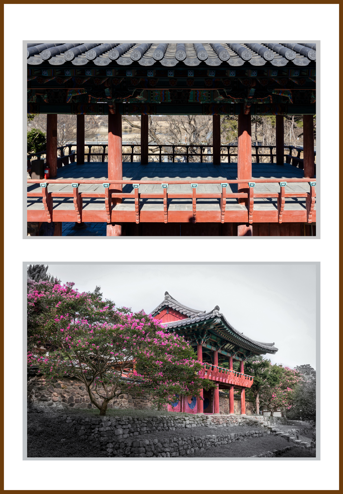
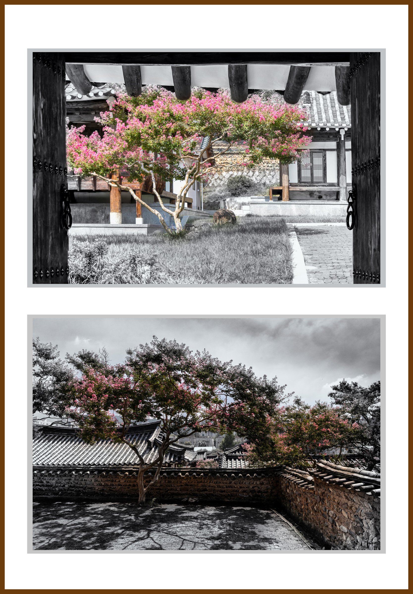
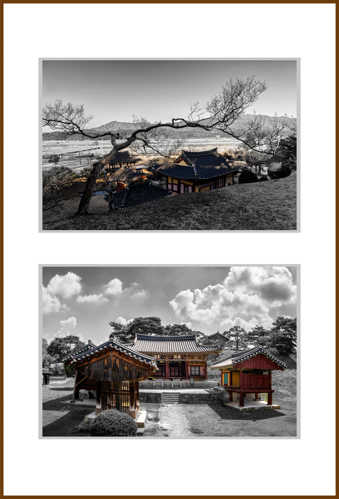
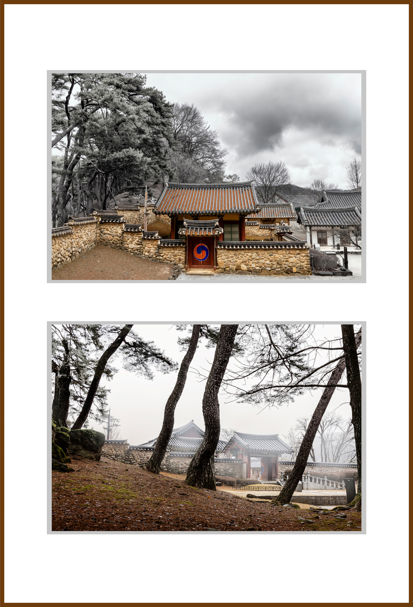
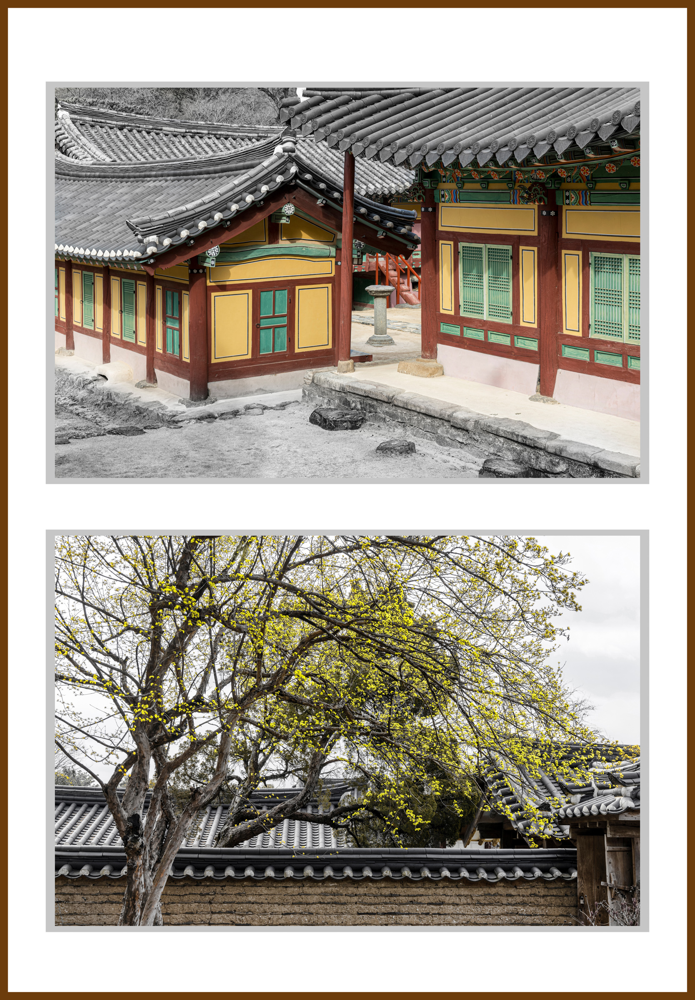
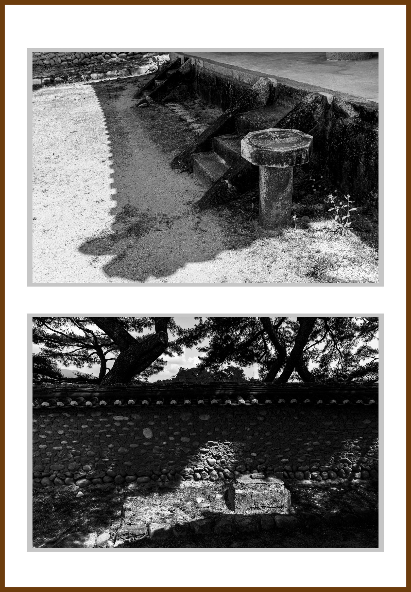
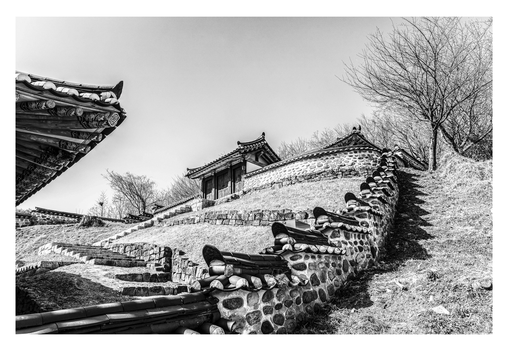
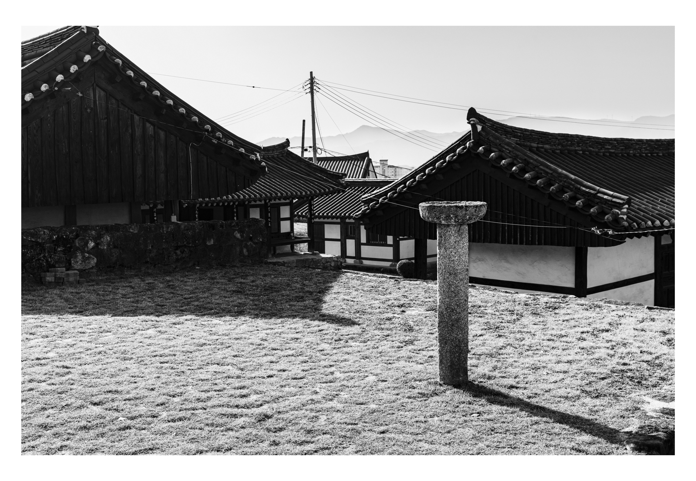
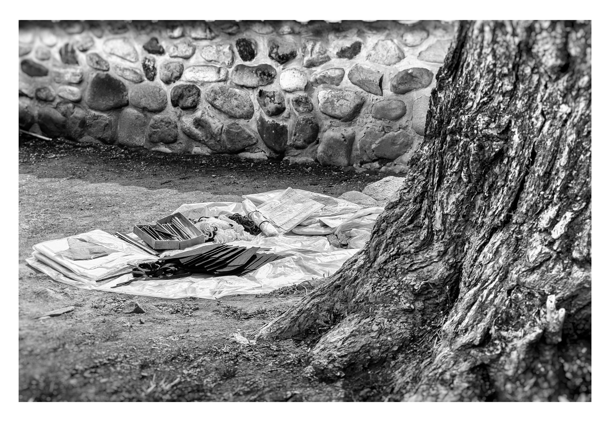
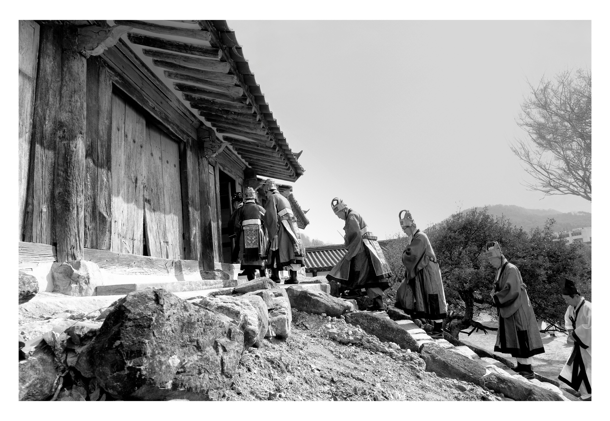
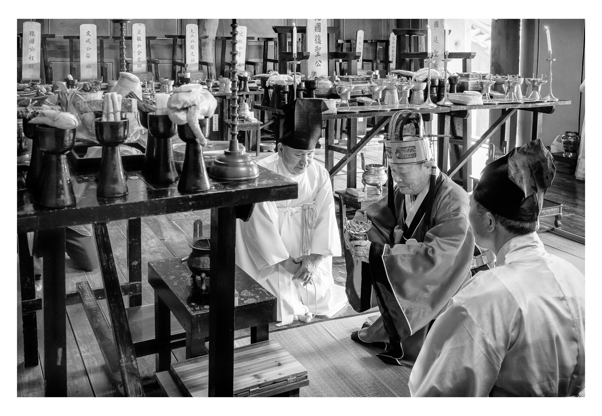
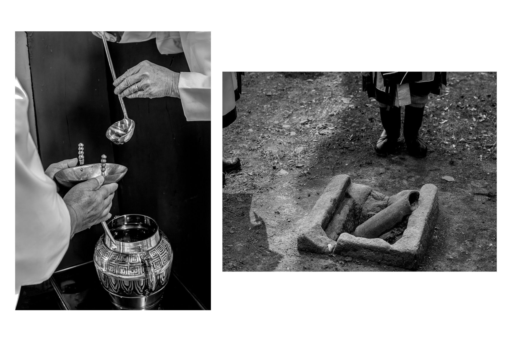